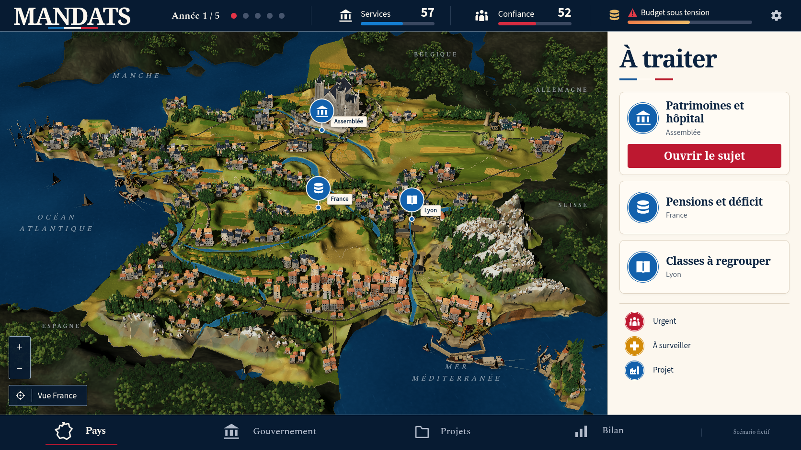
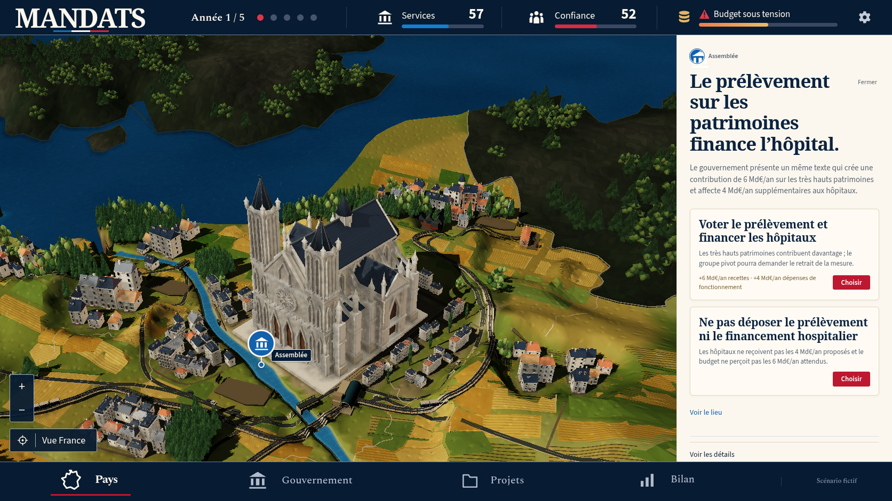
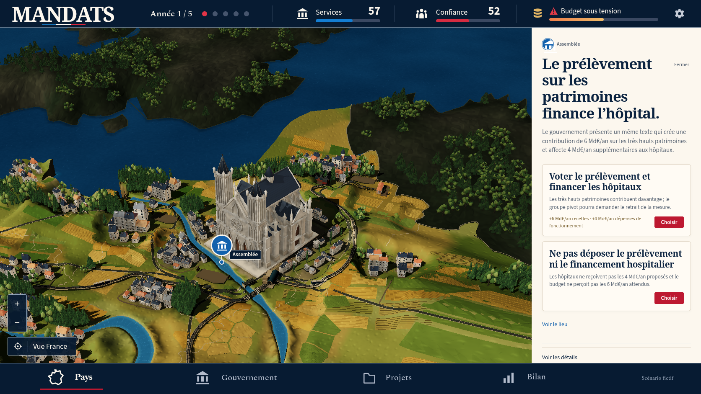
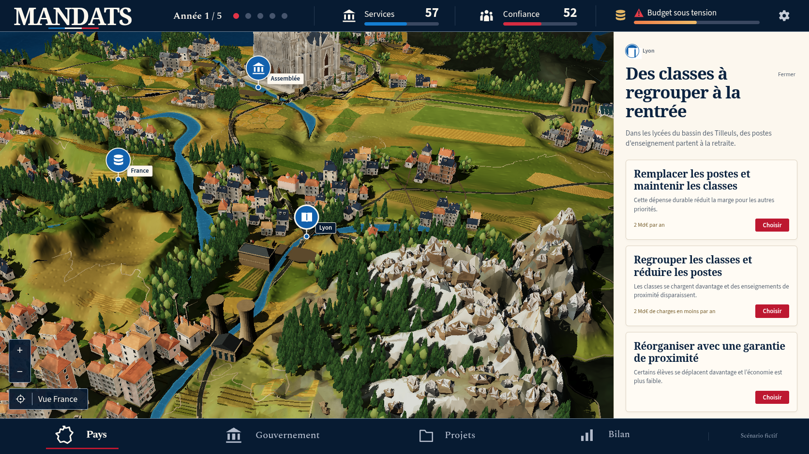

Passe 34 : nonconform
La référence confirmée et le jeu réel
La lumière révèle davantage le relief et la neige gagne de vraies cassures, mais le rendu reste distinct de la maquette. Les ombres des voies sont trop noires, la mer trop uniforme, les grandes parcelles et les falaises restent trop simplifiées.
7 vues réelles, Chromium 151.0.7922.173, 1672 × 941, DPR 1, zéro décision. Erreurs JavaScript : 0 ; requêtes échouées : 0 ; erreurs HTTP : 0 ; avertissements console : 0 ; erreurs console : 0.
Référence confirmée

Vue nationale réelle

Vue nationale réelle34 : relief plus modelé, mais mer trop lisse, grandes parcelles et ports différents.
Conditions et actions · Entrées de partieParis


Façade élargie et rues recomposées ; deux maisons restent refusées par les corridors, ombres trop noires.
Conditions et actions · Entrées de partieSeine et berges


Le bassin et les réseaux sont visibles au zoom natif ; leur disposition et leurs matières restent différentes.
Conditions et actions · Entrées de partieLyon et Alpes


Cassures et neige locale enrichies, mais grands pans minéraux et ombres restent trop marqués.
Conditions et actions · Entrées de partieRetour national

Retour par contrôles natifs au même cadrage, zéro décision dépensée ; mêmes écarts visuels.
Conditions et actions · Entrées de partieÉcarts observés
- Maquette originale et cinq captures natives effectivement ouvertes côte à côte par root.
- La cathédrale est plus large, mais sa silhouette, ses matières et son implantation restent différentes.
- Les petites cassures et névés sont visibles sur les Alpes ; les grands pans du terrain demeurent géométriques.
- Le modelé chaud du terrain est plus lisible ; les ombres noires des voies et de certains volumes dépassent le contraste de la référence.
- La mer est devenue trop uniforme et manque de reflets détaillés.
- Le cadrage, les grandes parcelles, la densité urbaine et la forme des ports ne reproduisent pas la composition exacte de la maquette.
- Le retour national conserve le cadrage et aucune manipulation ne dépense de décision.
- Audit composé34 réellement échoué : trois adresses refusées et deux points de pied du même pin sans triangle de sol. Ces deux points existaient déjà dans le rapport33.
- Le test ciblé34 passe la première attente des modèles après décision, mais échoue à la reprise après rechargement au délai existant de15 secondes. WebKit ciblé et quatre suites complètes non exécutés sur34.
Preuves de capture · Build réellement servi · Revue enregistrée